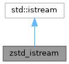
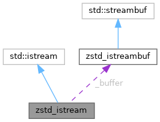

|
Harper Sieve of Collatz
|
Creates an istream subclass and connects it to a zstd_istreambuf so it may be passed around like a normal istream.
More...
#include <zstd_decompress.hpp>


Public Member Functions | |
Lifecycle Management | |
| zstd_istream (const zstd_istream &)=delete | |
| Disallow copying and moving. | |
| zstd_istream & | operator= (const zstd_istream &)=delete |
| Disallow copying and moving. | |
| zstd_istream (std::istream &underlying) | |
Constructor takes an underlying istream to connect with a zstd_istreambuf. | |
Private Attributes | |
| zstd_istreambuf | _buffer |
The actual streambuf to send data in/out of, connected to this objects rdbuf. | |
Creates an istream subclass and connects it to a zstd_istreambuf so it may be passed around like a normal istream.
This class largely just wraps the zstd_istreambuf to make reading ZSTD data easier.
|
inline |
Constructor takes an underlying istream to connect with a zstd_istreambuf.
| underlying | The source istream where ZSTD should read compressed data from. |